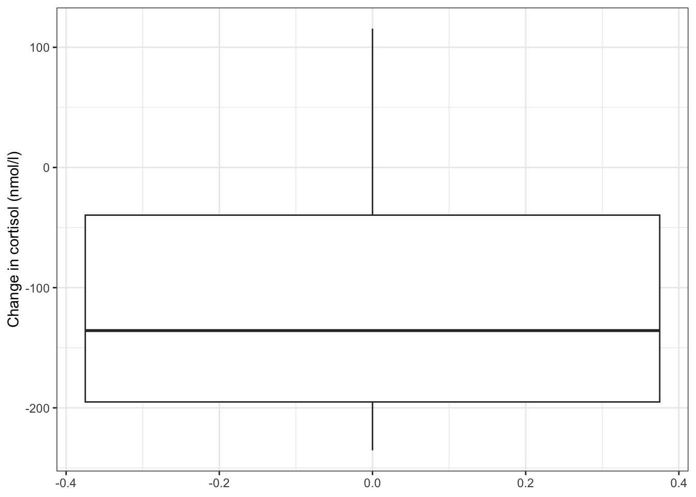
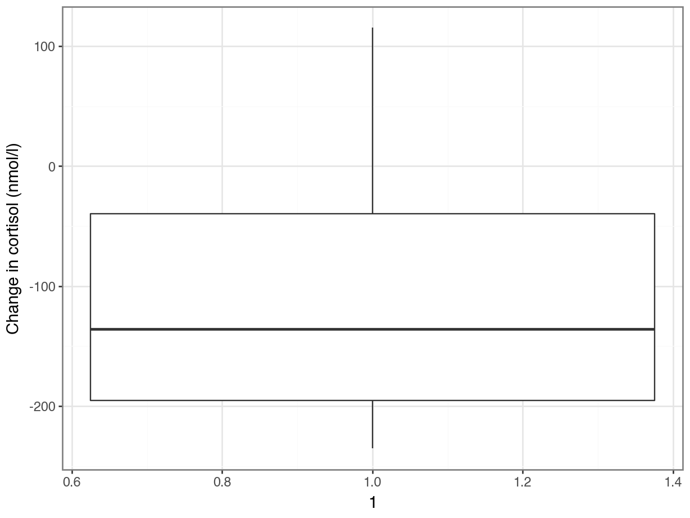
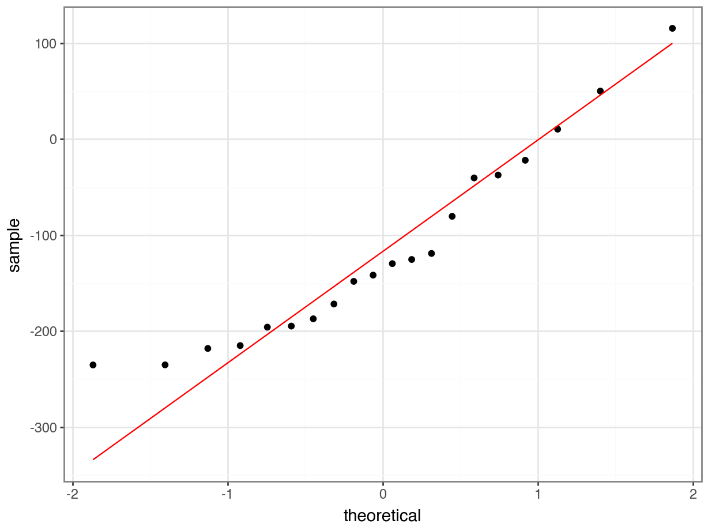
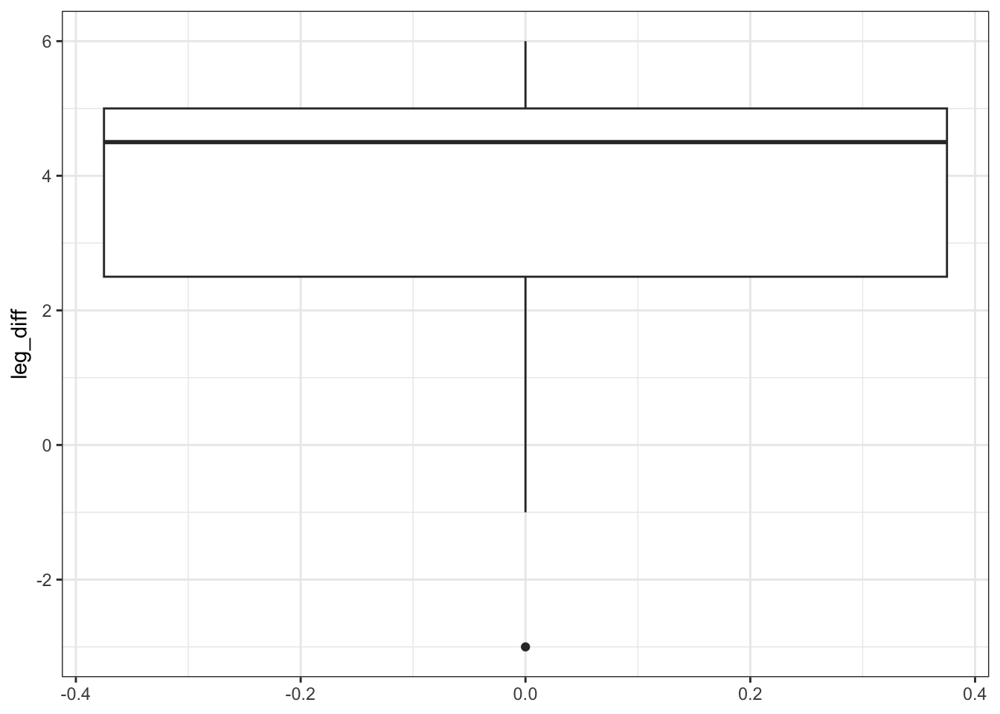
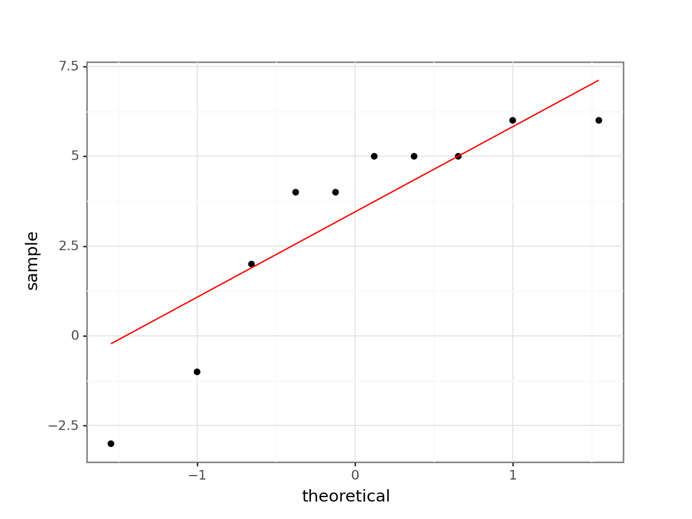
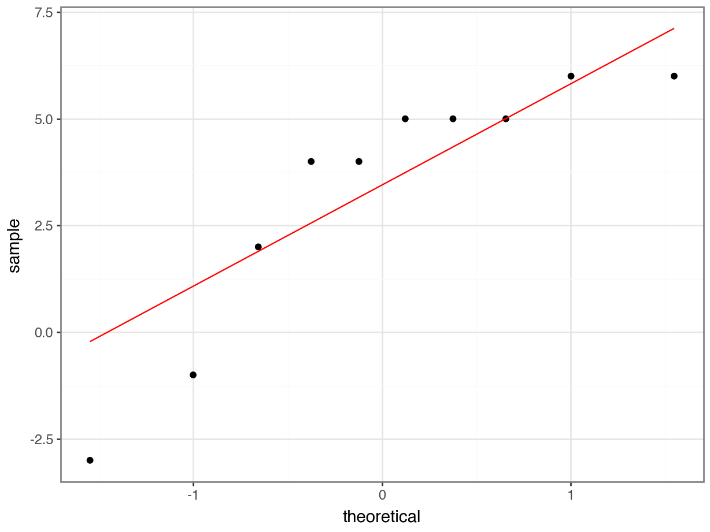

# A collection of R packages designed for data science
library(tidyverse)
# Converts stats functions to a tidyverse-friendly format
library(rstatix)6 Paired data
TipLearning outcomes
Questions
- When do I perform a paired two-sample test?
- What are the assumptions?
- How do I interpret and present the results of the test?
- How do I deal with paired non-normal data?
Objectives
- Set out your hypothesis for comparing two paired samples of continuous data
- Be able to summarise and visualise the data
- Understand and assess the underlying assumptions of the test
- Perform a paired two-sample t-test
- Be able to interpret and report the results
- Be able to do these steps on non-normal data
A paired t-test is used when we have two samples of continuous data that can be paired (examples of these sort of data would be weights of individuals before and after a diet). This test is applicable if the number of paired points within the samples is large (>30) or, if the number of points is small, then this test also works when the parent distributions are normally distributed.
There is the assumption that each pair within the data is independent of each other.
6.1 Libraries and functions
NoteClick to expand
6.1.1 Libraries
6.1.2 Functions
# Performs a one-sample t-test, Student's t-test
# and Welch's t-test in later sections
rstatix::t_test()
# Performs a Shapiro-Wilk test for normality
stats::shapiro.test()
# Performs one and two sample Wilcoxon tests
rstatix::wilcox_test()
# Plots a Q-Q plot for comparison with a normal distribution
ggplot2::stat_qq()
# Adds a comparison line to the Q-Q plot
ggplot2::stat_qq_line()
# Plots jittered points by adding a small amount of random
# variation to each point, to handle overplotting
ggplot2::geom_jitter()
# Computes summary statistics
rstatix::get_summary_stats()
# "Widens" the data, increasing the number of columns
tidyr::pivot_wider()6.1.3 Libraries
# A Python data analysis and manipulation tool
import pandas as pd
# Simple yet exhaustive stats functions.
import pingouin as pg
# Python equivalent of `ggplot2`
from plotnine import *6.1.4 Functions
# Return reshaped DataFrame organised by given index / column values
pandas.DataFrame.pivot()
# Reads in a .csv file
pandas.DataFrame.read_csv()
# Performs the Shapiro-Wilk test for normality
pingouin.normality()
# Performs a t-test
pingouin.ttest()
# Performs Wilcoxon signed rank test
pingouin.wilcoxon()
# Plots a Q-Q plot for comparison with a normal distribution
plotnine.stats.stat_qq()
# Adds a comparison line to the Q-Q plot
plotnine.stats.stat_qq_line() |6.2 Data and hypotheses
For example, suppose we measure the cortisol levels in 20 adult females (nmol/l) first thing in the morning and again in the evening. We want to test whether the cortisol levels differs between the two measurement times. We will initially form the following null and alternative hypotheses:
- \(H_0\): There is no difference in cortisol level between times (\(\mu M = \mu E\))
- \(H_1\): There is a difference in cortisol levels between times (\(\mu M \neq \mu E\))
We use a two-sample, two-tailed paired t-test to see if we can reject the null hypothesis.
- We use a two-sample test because we now have two samples
- We use a two-tailed t-test because we want to know if our data suggest that the true (population) means are different from one another rather than that one mean is specifically bigger or smaller than the other
- We use a paired test because each data point in the first sample can be linked to another data point in the second sample by a connecting factor
- We’re using a t-test because we assume that the underlying population is normally distributed (We’ll check this in a bit)
The data are stored in a tidy format in the file data/CS1-twopaired.csv.
# load the data
cortisol <- read_csv("data/CS1-twopaired.csv")Rows: 40 Columns: 3
── Column specification ────────────────────────────────────────────────────────
Delimiter: ","
chr (1): time
dbl (2): patient_id, cortisol
ℹ Use `spec()` to retrieve the full column specification for this data.
ℹ Specify the column types or set `show_col_types = FALSE` to quiet this message.# have a look at the data
cortisol# A tibble: 40 × 3
patient_id time cortisol
<dbl> <chr> <dbl>
1 1 morning 311.
2 2 morning 146.
3 3 morning 297
4 4 morning 271.
5 5 morning 268.
6 6 morning 264.
7 7 morning 358.
8 8 morning 316.
9 9 morning 336.
10 10 morning 221.
# ℹ 30 more rows# load the data
cortisol_py = pd.read_csv('data/CS1-twopaired.csv')
# inspect the data
cortisol_py.head() patient_id time cortisol
0 1 morning 310.6
1 2 morning 146.1
2 3 morning 297.0
3 4 morning 270.9
4 5 morning 267.5We can see that the data frame consists of three columns:
patient_id, a unique ID for each patienttimewhen the cortisol level was measuredcortisol, which contains the measured value.
For each patient_id there are two measurements: one in the morning and one in the afternoon.
6.3 Summarise and visualise
It’s always a good idea to visualise your data, so let’s do that.
# create a boxplot
ggplot(cortisol,
aes(x = time, y = cortisol)) +
geom_boxplot() +
geom_jitter(width = 0.05) +
ylab("Cortisol level (nmol/l)")
Here we use also visualise the actual data points, to get a sense of how these data are spread out. To avoid overlapping the data points (try using geom_point() instead of geom_jitter()), we jitter the data points. What geom_jitter() does is add a small amount of variation to each point.
p = (ggplot(cortisol_py,
aes(x = "time",
y = "cortisol")) +
geom_boxplot() +
geom_jitter(width = 0.05) +
ylab("Cortisol level (nmol/l)"))
p.show()
However, this plot does not capture how the cortisol level of each individual subject has changed though. We can explore the individual changes between morning and evening by looking at the differences between the two times of measurement for each patient.
To do this, we need to put our data into a wide format, so we can calculate the change in cortisol level for each patient.
In tidyverse we can use the pivot_wider() function.
# calculate the difference between evening and morning values
cortisol_diff <- cortisol %>%
pivot_wider(id_cols = patient_id,
names_from = time,
values_from = cortisol) %>%
mutate(cortisol_change = evening - morning)
cortisol_diff# A tibble: 20 × 4
patient_id morning evening cortisol_change
<dbl> <dbl> <dbl> <dbl>
1 1 311. 273. -37.4
2 2 146. 65.7 -80.4
3 3 297 257. -40.4
4 4 271. 321 50.1
5 5 268. 80.3 -187.
6 6 264. 379. 116.
7 7 358. 163. -195.
8 8 316. 294. -22
9 9 336. 140. -196.
10 10 221. 231. 10.4
11 11 366 131. -235.
12 12 256. 114. -142.
13 13 432. 217. -215.
14 14 208. 60.1 -148.
15 15 324. 199. -125.
16 16 388. 170. -218.
17 17 332 160. -172.
18 18 414. 179. -235.
19 19 405. 286 -119.
20 20 356. 226. -130. There are three arguments in pivot_wider():
id_cols = patient_idtells it that each observational unit is determined bypatient_idnames_from = timesays that there will be new columns, with names from thetimecolumn (in this case, there are two values in there,morningandevening)values_from = cortisolpopulates the new columns with the values coming from thecortisolcolumn
Lastly, we create a new column cortisol_change that contains the difference between the evening and morning measurements.
After this we can plot our data:
# plot the data
ggplot(cortisol_diff,
aes(y = cortisol_change)) +
geom_boxplot() +
ylab("Change in cortisol (nmol/l)")
The differences in cortisol levels appear to be very much less than zero, meaning that the evening cortisol levels appear to be much lower than the morning ones. As such we would expect that the test would give a pretty significant result.
An alternative representation would be to plot the data points for both evening and morning and connect them by patient:
# plot cortisol levels by patient
ggplot(cortisol,
aes(x = time,
y = cortisol,
group = patient_id)) +
geom_point() +
geom_line()
This gives a similar picture to what the boxplot was telling us, that for most patients the cortisol levels are higher in the morning than in the evening.
# reformat the data into a 'wide' format
cortisol_diff_py = pd.pivot(cortisol_py, index = "patient_id", columns = "time", values = "cortisol")
# add a new column with difference between
# evening and morning cortisol levels
cortisol_diff_py["cortisol_change"] = cortisol_diff_py["evening"].subtract(cortisol_diff_py["morning"])
# have a look at the format
cortisol_diff_py.head()time evening morning cortisol_change
patient_id
1 273.2 310.6 -37.4
2 65.7 146.1 -80.4
3 256.6 297.0 -40.4
4 321.0 270.9 50.1
5 80.3 267.5 -187.2After this we can plot our data:
# plot the data
p = (ggplot(cortisol_diff_py,
aes(x = "1",
y = "cortisol_change")) +
geom_boxplot() +
ylab("Change in cortisol (nmol/l)"))
p.show()
The differences in cortisol levels appear to be very much less than zero, meaning that the evening cortisol levels appear to be much lower than the morning ones. As such we would expect that the test would give a pretty significant result.
An alternative representation would be to plot the data points for both evening and morning and connect them by patient:
# plot cortisol levels by patient
p = (ggplot(cortisol_py,
aes(x = "time",
y = "cortisol",
group = "patient_id")) +
geom_point() +
geom_line())
p.show()
This gives a similar picture to what the boxplot was telling us, that for most patients the cortisol levels are higher in the morning than in the evening.
6.4 Assumptions
You will do this in the exercise!
6.5 Implement and interpret the test
Perform a two-sample, two-tailed, paired t-test:
# perform the test
t_test(cortisol ~ time,
alternative = "two.sided",
paired = TRUE,
data = cortisol)- The first argument must be in the formula format:
response ~ predictor - The
alternativeargument gives the type of alternative hypothesis and must be one oftwo.sided,greaterorless - The
paired = TRUEargument indicates that the data are paired
From our perspective the value of interest in the output is the p (5.29^{-5}).
To perform a paired t-test we can use the same pg.ttest() as before, but set the argument paired = True.
Annoyingly, the output is not entirely visible because the data frame is too wide. To deal with that, we can simply transpose it with transpose()
pg.ttest(cortisol_diff_py["evening"],
cortisol_diff_py["morning"],
alternative = "two-sided",
paired = True).transpose() T-test
T -5.18329
dof 19
alternative two-sided
p-val 0.000053
CI95% [-162.96, -69.21]
cohen-d 1.434359
BF10 491.599
power 0.99998From our perspective the value of interest is the p-val.
Since the p-value = 5.29 \(\times\) 10-5) and thus substantially less than 0.05 we can reject the null hypothesis and state:
A two-tailed, paired t-test indicated that the average cortisol level in adult females differed significantly between the morning (313.5 nmol/l) and the evening (197.4 nmol/l, p = 5.3 * 10-5).
6.6 Dealing with non-normal data
The example above assumes that the paired data come from parent distributions that are normal. As we’ve seen before, we may have data where we can’t rely on that assumption. Fortunately, there is very little that we need to change in our approach if we want to analyse paired data that violate the assumption of normality.
6.6.1 Data and hypotheses
Using the cortisol data from before we form the following null and alternative hypotheses:
- \(H_0\): The median of the difference in cortisol levels between the two groups is 0 \((\mu M = \mu E)\)
- \(H_1\): The median of the difference in cortisol levels between the two groups is not 0 \((\mu M \neq \mu E)\)
We use a two-tailed Wilcoxon signed rank test to see if we can reject the null hypothesis.
6.6.2 Summarise and visualise
Already implemented previously.
6.6.3 Assumptions
These have been checked previously.
6.6.4 Implement and interpret the test
Perform a two-tailed, Wilcoxon signed rank test:
wilcox_test(cortisol ~ time,
alternative = "two.sided",
paired = TRUE,
data = cortisol)# A tibble: 1 × 7
.y. group1 group2 n1 n2 statistic p
* <chr> <chr> <chr> <int> <int> <dbl> <dbl>
1 cortisol evening morning 20 20 13 0.000168- The first argument must be in the formula format:
response ~ predictor - The
alternativeargument gives the type of alternative hypothesis and must be one oftwo.sided,greaterorless - The
paired = TRUEargument indicates that the data are paired
We’ll use the wide format data set that we created previously:
pg.wilcoxon(x = cortisol_diff_py["evening"],
y = cortisol_diff_py["morning"],
alternative = "two-sided",
correction = True) W-val alternative p-val RBC CLES
Wilcoxon 13.0 two-sided 0.000168 -0.87619 0.16The p-value is given in the p column (p-value = 0.000168). Given that this is less than 0.05 we can still reject the null hypothesis.
A two-tailed, Wilcoxon signed rank test indicated that the median cortisol level in adult females differed significantly between the morning (320.5 nmol/l) and the evening (188.9 nmol/l, p = 0.00017).
6.7 Exercises
6.7.1 Cortisol levels
ExerciseExercise 1
Level:
Check the assumptions necessary for this this paired t-test. Was a paired t-test an appropriate test?
TipAnswer
We actually don’t care too much about the distributions of the individual groups. Instead we care about the properties of the differences. So for a paired t-test to be valid for this data set, we need the differences between the morning and evening values to be normally distributed.
Let’s check this with the Shapiro-Wilk test and Q-Q plots, using the wide data frames we created earlier.
Perform Shapiro-Wilk test:
# perform Shapiro-Wilk test on cortisol differences
shapiro.test(cortisol_diff$cortisol_change)
Shapiro-Wilk normality test
data: cortisol_diff$cortisol_change
W = 0.92362, p-value = 0.1164Create Q-Q plot:
# create the Q-Q plot
ggplot(cortisol_diff,
aes(sample = cortisol_change)) +
stat_qq() +
stat_qq_line(colour = "blue")
Perform Shapiro-Wilk test:
# perform Shapiro-Wilk test on cortisol differences
pg.normality(cortisol_diff_py["cortisol_change"]) W pval normal
cortisol_change 0.923622 0.116355 TrueCreate Q-Q plot:
# create the Q-Q plot
p = (ggplot(cortisol_diff_py,
aes(sample = "cortisol_change")) +
stat_qq() +
stat_qq_line(colour = "red"))
p.show()
The Shapiro-Wilk test says that the data are normal enough and whilst the Q-Q plot is mostly fine, there is some suggestion of snaking at the bottom left. I’m actually OK with this because the suggestion of snaking is actually only due to a single point (the last point on the left). If you cover that point up with your thumb (or finger of your choice) then the remaining points in the Q-Q plot look pretty darn good, and so the suggestion of snaking is actually driven by only a single point (which can happen by chance). As such I’m happy that the assumption of normality is well-met in this case. This single point check is a useful thing to remember when assessing diagnostic plots.
So, yep, a paired t-test is appropriate for this data set.
6.7.2 Deer legs
ExerciseExercise 2
Level:
Using the following data on deer legs (yes, really!), test the null hypothesis that the fore and hind legs of the deer in this data set are the same length.
# A tibble: 10 × 2
hindleg foreleg
<dbl> <dbl>
1 142 138
2 140 136
3 144 147
4 144 139
5 142 143
6 146 141
7 149 143
8 150 145
9 142 136
10 148 146Do these results provide any evidence to suggest that fore- and hind-leg length differ in deer?
- Write down the null and alternative hypotheses
- Import the data from
data/CS1-deer.csv - Summarise and visualise the data
- Check normality
- Discuss with your (virtual) neighbour which test is most appropriate?
- Perform the test
- Write down a sentence that summarises the results that you have found
TipAnswer
Hypotheses
\(H_0\) : foreleg average (mean or median) \(=\) hindleg average (mean or median)
\(H_1\) : foreleg average \(\neq\) hindleg average
Import data, summarise and visualise
First of all, we need to load in the data.
# load the data
deer <- read_csv("data/CS1-deer.csv")
# have a look
deer# A tibble: 20 × 3
id leg length
<dbl> <chr> <dbl>
1 1 hindleg 142
2 2 hindleg 140
3 3 hindleg 144
4 4 hindleg 144
5 5 hindleg 142
6 6 hindleg 146
7 7 hindleg 149
8 8 hindleg 150
9 9 hindleg 142
10 10 hindleg 148
11 1 foreleg 138
12 2 foreleg 136
13 3 foreleg 147
14 4 foreleg 139
15 5 foreleg 143
16 6 foreleg 141
17 7 foreleg 143
18 8 foreleg 145
19 9 foreleg 136
20 10 foreleg 146The ordering of the data is important here; the first hind leg row corresponds to the first fore leg row, the second to the second and so on. To indicate this we use an id column, where each observation has a unique ID.
Let’s look at the data and see what it tells us.
# summarise the data
summary(deer) id leg length
Min. : 1.0 Length:20 Min. :136.0
1st Qu.: 3.0 Class :character 1st Qu.:140.8
Median : 5.5 Mode :character Median :143.0
Mean : 5.5 Mean :143.1
3rd Qu.: 8.0 3rd Qu.:146.0
Max. :10.0 Max. :150.0 We can also summarise some of the main summary statistics for each type of leg. We don’t need summary statistics for the id column, so we unselect it with select(-id).
To make life easy we use the get_summary_stats() function from the rstatix package. Have a look at the help function to see what kind of summary statistics it can produce. In this case I’m using the type = "common" option to specify that I want to find commonly used statistics (e.g. sample number, min, max, median, mean etc.)
# or even summarise by leg type
deer %>%
select(-id) %>%
group_by(leg) %>%
get_summary_stats(type = "common")# A tibble: 2 × 11
leg variable n min max median iqr mean sd se ci
<chr> <fct> <dbl> <dbl> <dbl> <dbl> <dbl> <dbl> <dbl> <dbl> <dbl>
1 foreleg length 10 136 147 142 6.25 141. 4.03 1.27 2.88
2 hindleg length 10 140 150 144 5.5 145. 3.40 1.08 2.43Visualising the data is often more useful:
# we can also visualise the data
ggplot(deer,
aes(x = leg, y = length)) +
geom_boxplot()
All of this suggests that there might be a difference between the legs, with hind legs being longer than forelegs. However, this representation obscures the fact that we have paired data. What we really need to look at is the difference in leg length for each observation:
# create a data set that contains the difference in leg length
leg_diff <- deer %>%
pivot_wider(id_cols = id,
names_from = leg,
values_from = length) %>%
mutate(leg_diff = hindleg - foreleg)# plot the difference in leg length
ggplot(leg_diff,
aes(y = leg_diff)) +
geom_boxplot()
Additionally, we can also plot the data by observation:
# plot the data by observation
ggplot(deer,
aes(x = leg, y = length, group = id)) +
geom_point() +
geom_line()
# load the data
deer_py = pd.read_csv("data/CS1-deer.csv")
# have a look
deer_py.head() id leg length
0 1 hindleg 142
1 2 hindleg 140
2 3 hindleg 144
3 4 hindleg 144
4 5 hindleg 142The ordering of the data is important here; the first hind leg row corresponds to the first fore leg row, the second to the second and so on. To indicate this we use an id column, where each observation has a unique ID.
Let’s look at the data and see what we can see.
# summarise the data
deer_py.describe() id length
count 20.000000 20.000000
mean 5.500000 143.050000
std 2.946898 4.006245
min 1.000000 136.000000
25% 3.000000 140.750000
50% 5.500000 143.000000
75% 8.000000 146.000000
max 10.000000 150.000000We can also summarise by leg type:
deer_py.groupby("leg")["length"].describe() count mean std min 25% 50% 75% max
leg
foreleg 10.0 141.4 4.033196 136.0 138.25 142.0 144.5 147.0
hindleg 10.0 144.7 3.400980 140.0 142.00 144.0 147.5 150.0It might be more helpful to look at the difference in leg length. In order to calculate that, we need to reformat our data into a ‘wide’ format first:
# reformat the data into a 'wide' format
leg_diff_py = pd.pivot(deer_py,
index = "id",
columns = "leg",
values = "length")
# have a look at the format
leg_diff_py.head()leg foreleg hindleg
id
1 138 142
2 136 140
3 147 144
4 139 144
5 143 142Next, we can add a new column leg_diff that contains the leg difference:
# add a new column with difference between
# hind and fore leg length
leg_diff_py["leg_diff"] = leg_diff_py["hindleg"].subtract(leg_diff_py["foreleg"])
Finally, we can visualise this:
# we can also visualise the data
p = (ggplot(leg_diff_py,
aes(x = "1",
y = "leg_diff")) +
geom_boxplot())
p.show()
All of this suggests that there might be a difference between the legs, with hind legs being longer than forelegs. However, this representation obscures the fact that we have paired data. What we really need to look at is the difference in leg length for each observation:
# plot paired observations
p = (ggplot(deer_py,
aes(x = "leg",
y = "length",
group = "id")) +
geom_point() +
geom_line())
p.show()
All of this gives us a much clearer picture. It looks as though the hindlegs are about 4 cm longer than the forelegs, on average. It also suggests that our leg differences might not be normally distributed (the data look a bit skewed in the boxplot).
Assumptions
We need to consider the distribution of the difference in leg lengths rather than the individual distributions.
Shapiro-Wilk test:
# perform Shapiro-Wilk test on leg differences
shapiro.test(leg_diff$leg_diff)
Shapiro-Wilk normality test
data: leg_diff$leg_diff
W = 0.81366, p-value = 0.02123Q-Q plot:
# create a Q-Q plot
ggplot(leg_diff,
aes(sample = leg_diff)) +
stat_qq() +
stat_qq_line(colour = "blue")
Shapiro-Wilk test:
# perform Shapiro-Wilk test on leg length differences
pg.normality(leg_diff_py["leg_diff"]) W pval normal
leg_diff 0.813656 0.021235 FalseCreate the Q-Q plot:
# create the Q-Q plot
p = (ggplot(leg_diff_py,
aes(sample = "leg_diff")) +
stat_qq() +
stat_qq_line(colour = "red"))
p.show()
Both our Shapiro-Wilk test and our Q-Q plot suggest that the difference data aren’t normally distributed, which rules out a paired t-test. We should therefore consider a paired Wilcoxon signed rank test next. Remember that this test requires that the distribution of differences be of a similar shape, whereas our box plot from before suggested that the data were very much skewed.
This means that we’re not able to perform a paired Wilcoxon signed rank test either!
Conclusions
So, frustratingly, neither of the tests at our disposal are appropriate for this data set. The differences in fore leg and hind leg lengths are neither normal enough for a paired t-test nor are they symmetric enough for a Wilcoxon signed rank test. We also don’t have enough data to just use the t-test (we’d need more than 30 points or so). So what do we do in this situation? Well, the answer is that there aren’t actually any traditional statistical tests that are valid for this data set as it stands!
There are two options available to someone:
- try transforming the raw data (take logs, square root, reciprocals) and hope that one of them leads to a modified data set that satisfies the assumptions of one of the tests we’ve covered, or
- use a permutation test approach (which would work but is beyond the scope of this course).
The reason I included this example in the first practical is purely to illustrate how a very simple data set with an apparently clear message (leg lengths differ within deer) can be intractable. You don’t need to have very complex data sets before you go beyond the capabilities of classical statistics.
As Jeremy Clarkson would put it:
And on that bombshell, it’s time to end. Goodnight!
6.8 Summary
TipKey points
- Paired t-tests are used when you have two paired samples of continuous data, which are normally distributed
- A good way of assessing the assumption of normality is by checking the data against a Q-Q plot
- The Wilcoxon signed rank test is used when you have two paired samples of continuous data, which are not normally distributed.